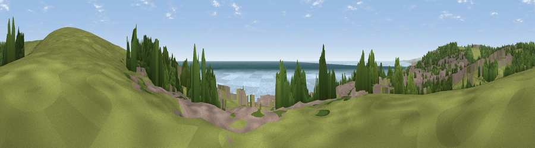

Viewpoint near Roedean
#10094 in England · top 36% of its area beats it · near RoedeanWhere it is
The exact computed spot (TQ 34125 03575). Click the marker for map links.
The view, rendered

A 360° render of this exact spot computed from the terrain model, tree cover and land cover — summer colours, afternoon light, calibrated against photographs of famous viewpoints. Real trees, hedges and buildings will differ in detail.
The panorama
Grey silhouette: terrain skyline in each direction (720 bearings, Earth curvature and refraction included). Dashed green: skyline with trees (+15 m) and buildings (+8 m) as obstacles. Blue strip: how far the ground is visible on each bearing.
Where the view opens
Wedge length = distance to the farthest visible ground on that bearing (vegetation-aware). Rings at 10, 25 and 50 km.
What fills the view
39% water · 29% grassland · 19% built-up · 13% woodland
Angular shares of the visible panorama (visual magnitude), not map area. Landscape diversity 0.58 (0–1 Shannon).
Key numbers
More beautiful places nearby
The staircase of upgrades: each row has a higher view potential than everything closer. Driving times are estimates from straight-line distance, calibrated against real road routing — check an actual route before setting out.
| Place | Direction | Drive | Score |
|---|---|---|---|
| Viewpoint near Roedean | NE · 1 km | ~2 min | 74.1 |
| Swanborough Hill | ENE · 6 km | ~13 min | 80.5 |
| Viewpoint near Iford | ENE · 6 km | ~13 min | 80.7 |
| Viewpoint near Westmeston | N · 9 km | ~18 min | 80.9 |
| Ditchling Beacon | N · 10 km | ~19 min | 81.8 |
| Fulking Hill | NW · 12 km | ~22 min | 82.2 |
| Viewpoint near Firle | E · 12 km | ~22 min | 83.8 |
| Viewpoint near Firle | E · 14 km | ~25 min | 85.4 |
50.81620, -0.09743 · source: screening · position refined by local search. Computed location — check access rights before visiting.